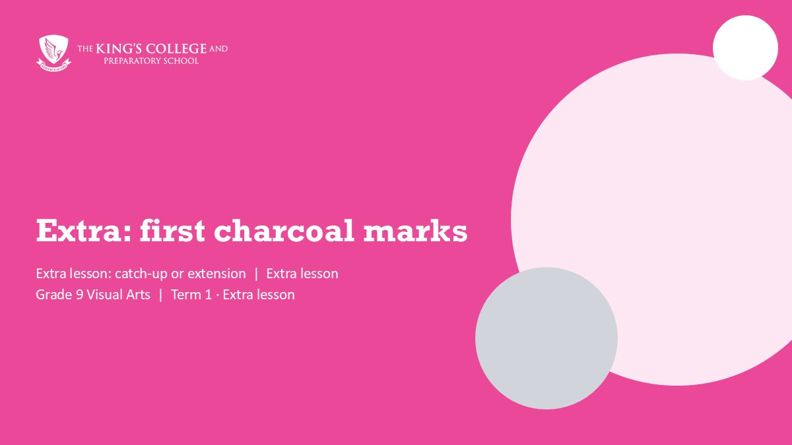

Term 1 · Extra lesson · Extra lesson: catch-up
Extra: start charcoal mark-making
Start here
Today I will
- Feel the difference between vine and compressed charcoal
- Make a range of charcoal marks
- Work cleanly with a messy medium
Think first
Charcoal is just burnt wood. Why do you think artists have used it for thousands of years?
Words to know
- Vine charcoal
- Thin, soft sticks of burnt vine; light marks that smudge and erase easily.
- Compressed charcoal
- Charcoal powder pressed into sticks; darker and harder to erase.
- Mark-making
- The different lines, dots and textures you can make with a medium.
- Smudging
- Rubbing charcoal to soften and blend it; also accidental smears.
Slides

Notes
Early start on charcoal marks if the calendar allows.
Two charcoals, different jobs
| Vine charcoal | Compressed charcoal |
|---|---|
| Light to mid grey | Rich, deep black |
| Smudges and erases easily | Hard to erase |
| Good for planning and soft tones | Good for final darks and strong lines |
Remember
Vine to plan, compressed to finish.
Practical
You need: Vine and compressed charcoal, newsprint, putty eraser
Charcoal mark-making sampler
- Divide a newsprint sheet into six boxes.
- Box 1–2: lines with the tip of vine, then compressed charcoal, light to heavy pressure.
- Box 3: the side of the stick for broad tone.
- Box 4: hatching and cross-hatching.
- Box 5: smudge a tone with a tissue, then lift a shape out with a putty eraser.
- Box 6: invent your own texture (fur, bark, water). Label every box.
Test yourself
- Which charcoal is darker?
- Which charcoal do you plan with?
- How can you make a light area in charcoal?
Show answers
1. Compressed charcoal. 2. Vine charcoal. 3. Lift it out with a putty eraser (or leave the paper clean).
Finished early?
Charcoal texture sampler
Invent new charcoal textures.
- Draw four small boxes in your VJ (or on newsprint).
- Fill each with a texture: fur, bark, water and stone.
- Use the tip, the side and broken marks of the charcoal.
- Lift a highlight out of one box with the putty eraser and label every box.